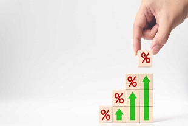

Listamos e
explicamos brevemente alguns indicadores econômicos para você!
O que é inflação?
A inflação é um indicador que demonstra a alteração de preços dos bens e serviços. Quando a
inflação
aumenta, há uma diminuição no poder de compra da nossa moeda e, consequentemente, diminui-se o
poder
de
compra do consumidor. Ela pode ser gerada por diversos fatores: falta equilíbrio entre a oferta
e
demanda de bens e serviços em um país; aumento do custo de produção de um bem ou serviço;
aumento
excessivo da emissão da moeda nacional, entre outros. Além disso, quando a inflação está alta,
outros impactos são gerados para a economia como, por exemplo, a diminuição de investimentos no
país. A inflação é calculada através do IPCA (Índice de Preços ao Consumidor Amplo). Fonte: Banco
Central do Brasil, 2023.
O que é PIB?
A sigla PIB significa Produto Interno Bruto. É um indicador que representa toda a produção de
bens
em serviços durante o período de um ano. Através desse indicador, é possível analisar se houve
um
crescimento ou não da economia de um país. Em 2022, por exemplo, o PIB do Brasil foi de
aproximadamente R$9,9 trilhões e houve um crescimento de 2,9%, em relação ao ano anterior. Outro
indicador importante - derivado do valor do PIB, é o de PIB per capita, que demonstra um valor
médio
do PIB
em relação à população. Segundo os últimos dados do IBGE, o PIB per capita
do Brasil era de R$ 35.935,74.
Fonte: IBGE, 2023.

O que é Taxa SELIC?
A Taxa Selic (Sistema Especial de Liquidação e de Custódia) é a taxa de juros básica da
economia
brasileira. De forma simples, pode ser descrita como o “valor do dinheiro no tempo”. É
considerada a
taxa referência para os outros tipos de juros praticados na economia e também é utilizada como
referência em políticas monetárias a fim de controlar a inflação. Essa taxa é definida a cada 45
dias pelo Comitê de Política Monetária (Copom) do Banco Central.
Fonte: Banco Central, 2023.
O que é IPCA?
IPCA significa Índice Nacional de Preços ao Consumidor Amplo. É um dos índices mais importantes
para
o cálculo da tendência de inflação no Brasil. A partir dele é calculada mensalmente a variação
dos
preços de bens e serviços utilizados pelos consumidores. Até abril de 2023, o IPCA acumulado nos
últimos 12 meses era de 4,18%. Fonte: IBGE, 2023.
O que é IGP-M?
O Índice Geral de Preços – Mercado (IGP-M) é muito utilizado para o cálculo de novas tarifas,
como
telefonia e energia, assim como em contratos de prestação de serviços e reajustes de contratos
de
aluguéis. É calculado mensalmente pelo Instituto Brasileiro de Economia da Fundação Getulio
Vargas
(FGV IBRE).
Fonte: FGV IBRE, 2023.
O que é INPC?
O INPC significa Índice Nacional de Preços ao Consumidor. Esse índice tem o objetivo de medir a
variação de preços de produtos ou serviços adquiridos por consumidores com renda familiar média
de
até 5 salários mínimos e que são residentes em áreas urbanas de algumas regiões do país. O seu
valor
é calculado mensalmente pelo IBGE. É também utilizado pelo governo para correções de salário
mínimo
e de valores de aposentadoria, por exemplo. Fonte: IBGE, 2023.